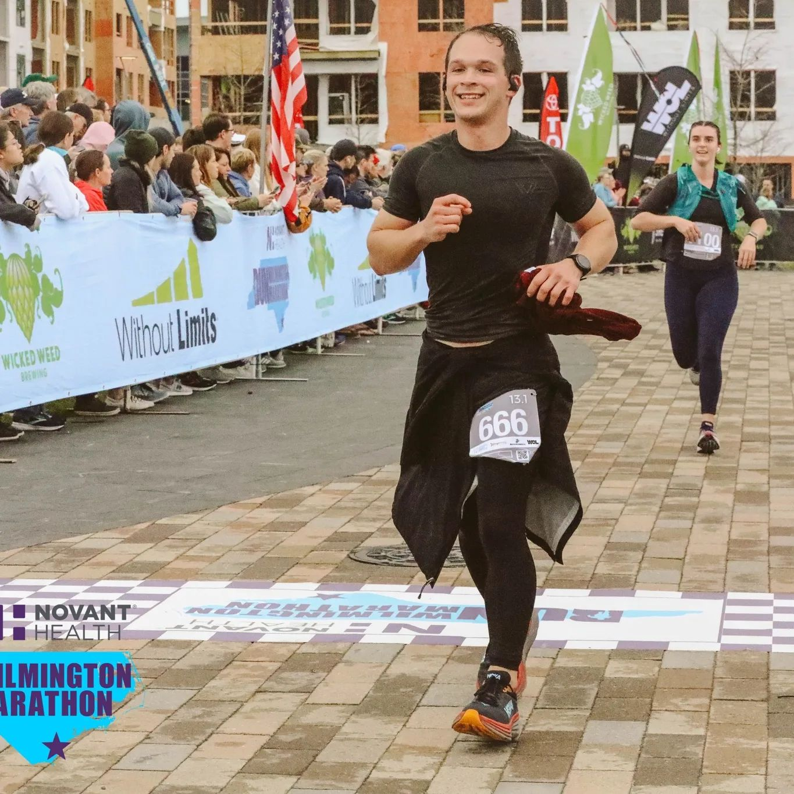
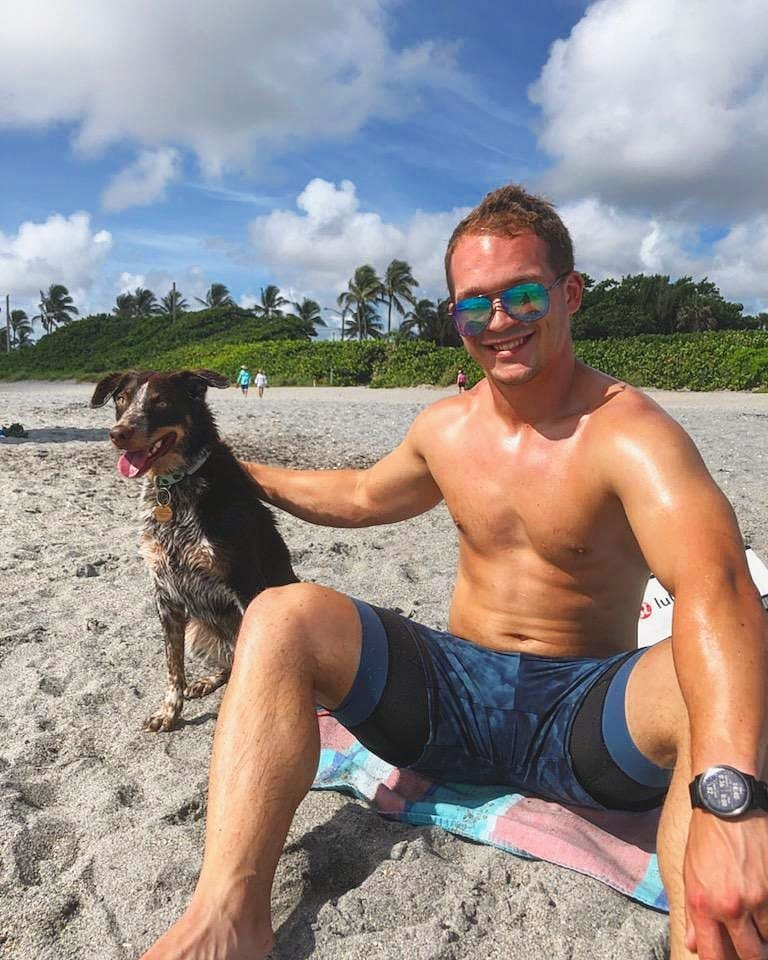

Hi, I'm Erik, originally from Detroit, MI. I've always been a lifelong athlete with a keen interest in computers and technology from a young age. Initially, I had plans to major in Computer Science, but my sports background and frequent injuries led me to switch gears and pursue a degree in Athletic Training.
I graduated in 2019 from Grand Valley State University with a Bachelor's degree in Athletic Training. After graduating, I embarked on an exciting journey working in professional baseball as an athletic trainer for the Milwaukee Brewers and Houston Astros for a total of 3 years. During this time, I gained valuable experience in injury prevention and rehabilitation initiatives while still retaining my love for technology.
To further expand my skillset and knowledge in the technology field, I delved into learning programming languages and mastering the intricacies of different technologies. This allowed me to maximize my efforts in injury prevention and rehabilitation, using cutting-edge technological solutions.
I like to unwind by. . .
Working outInitially a weight-lifter, I am also an avid runner and recently ran the Wilmington Half-Marathon. |
Chilling with MayaMaya and I are inseperable when I am home. Fortunately, we share a love of the beach and would spend the whole day there if possible. |
TravelingI was fortunate enough to travel across the country as a professional baseball athletic trainer. |
As I continued to evolve and grow in my career, I realized my passion for technology went beyond just sports medicine. I decided to pivot my career path and explore the vast world of technology to see how it can make a difference in various industries and organizations. I am now driven by the vision of using technology to help people and organizations perform at levels that exceed their expectations.
I'm excited about the endless possibilities and opportunities that lie ahead as I continue to pursue my passion for technology. I look forward to connecting with like-minded individuals and organizations to create innovative solutions and make a positive impact. Thank you for visiting my About Me page!
Let's connect!
Email